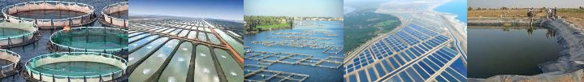
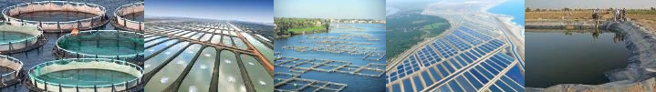
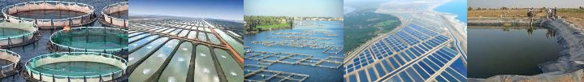

جمهورية مصر العربية
الهيئة العامة لتنمية الثروة السمكية

جمهورية مصر العربية
الهيئة العامة لتنمية الثروة السمكية
يُقسّم علماء الأحياء أنواع السمك إلى فئتين أساسيَّتين، هما الأسماك العظميّة والغضروفيّة.
تختلفُ الأسماك الغضروفية عن غيرها من الأنواع بأنَّ جسمها لا يحتوي هيكلاً عظمياً حقيقياً، بل هو -في الواقع- مُكوّنٌ من غضاريف طريّة تدعمُ شكل جسمها وأعضائها الداخليّة، ومع أنها تتنفَّسُ بالخياشيم ولكن فتحات الخياشيم لديها مكشوفةٌ تماماً وليست لها أيّ حماية، كما أنها تحتاجُ إلى الاستمرار بالحركة حفاظاً على نفسها عائمةً في الماء، وتعيشُ هذه الأسماك عادةً في مياه البحار والمُحيطات، وهي تشملُ جميع أنواع أسماك القرش والشَّفانين وأقاربها، وأنواع الأسماك الغضروفيّة قليلة نسبياً، وهي تتميَّزُ بأنها لا تضعُ إلا أعداداً قليلة من البيوض عند التكاثر، وأحياناً -كما في بعض أسماك القرش- تلدُ صغارها أحياء.
أما الأسماك العظميّة فإنَّ جسمها مُكوَّنٌ بالكامل من عظام صُلبة، وتغطّي جلدها حراشف متراكبة فوق بعضها، ولديها فوق خياشيمها غلافٌ واقٍ صُلْب يحميها من الأذى، كما أنَّ في أجسامها عضواً خاصاً يُشبه كيساً مملوءاً بالهواء، ويُساعدها على البقاء طافية في مياه البحر، حتى ولو كانت ساكنةً تماماً، وأنواع الأسماك العظميّة كثيرة جداً، وهي تضمّ جميع أنواع الأسماك في العالم تقريباً، فمنها ما يعيشُ في المياه العذبة من أنهارٍ وبحيرات، ومنها ما يسكن البحار الضحلة أو أعماقَ المُحيط، إلا أنّ أغلبها تسكنُ في أماكن قريبةً من سطح الماء، ومعظمها تتغذّى على النباتات والطحالب والعوالق، ولكن بعضها مُفترسة تأكل اللحوم، وتعتمدُ الأسماك العظميَّة في التكاثر على وضع أعدادٍ هائلة من البيوض قد تصلُ للآلاف، ومن ثمَّ تتركُها وترحلُ دون توفير أيّ نوعٍ من الحماية أو الرعاية لصغارها.
سمكة قارية تفضل العيش في المياه الضحلة. ودرجتا تحمل الحرارة العليا والدنيا هما 42 oم و 11-12 oم، على الترتيب، بينما المدى الحراري المفضل هو 31-36 o م والبلطي النيلي سمكه متنوعة التغذية تتغذى على الفيتوبلانكتون، البريفيتون، النباتات المائية، اللافقاريات الصغيرة، الكائنات الحيوانية القاعية، البقايا العضوية وتجمعات البكتريا المصاحبة لها. ويمكن للبلطي النيلي ترشيح الطعام من خلال حجز المواد العالقة بما في ذلك الفيتوبلانكتون والبكتريا في التجويف البلعومى، إلا أن وسيلة التغذية الرئيسية هى الرعي على طبقة البريفيتون. ويصل البلطي النيلي للنضوج الجنسي في الأحواض عند عمر يتراوح بين 5-6 شهور.
تضع الأنثى البالغ وزنها 100 جم حوالى 100 بيضة في الفقسة (البطن) الواحدة، بينما الأنثى التي تزن 600 - 1000 جم يمكن أن يصل عدد البيض الذي تضعه 1000 - 1500 بيضة. ويظل الذكر في موقع العش لحمايته وحماية منطقة النفوذ، وبذلك يمكنه تخصيب بيض عدد متوالى من الإناث. وإناث البلطي النيلي تصوم أثناء تحضين البيض واليرقات. ويمكن للبلطي النيلي أن يعيش لعمر 10 سنوات وقد يصل وزنه إلى أكثر من خمسة كجم.
هو جنس من الأسماك ينتمي إلى رتبة السلوريات أو القراميط، وفصيلة البياضيات، وهي أسماك تعيش في المياه العذبة في كل من أفريقيا الاستوائية وآسيا، وتتميز بعيون صغيرة، وزعنفة ظهرية كبيرة، وبوجود أربعة شوارب أو زوائد حسية حول الفم، وتتميز أسماك البياض بقيمتها الغذائية العالية وفوائدها العديدة للجسم.
تتواجد في البحيرات و المستنقعات و الأنهار و تتحاشى المياه المالحة تقضي تقريبا النهار بكامله في شقوق بين الحجارة و لذلك قلما تشاهد بالعين وتأكل الحشائش أحيانا و تفترس الأسماك الصغيرة و خاصة البلطيات ( بفصائلها المختلفة ), كما تتغذى على الحشرات و القشريات و القوقعيات و المواد الخضرية وضع البيض يتم من شهر إبريل إلى شهر يوليو حينها يبنيان عشا يشبه القرص المفلطح و في وسطه ثقب مركزي فيه يتم وضع البيض و يتناوبان حراسته و القرص و ثقبه المركزي يتناسب طرديا مع حجم السمكة يزيد بزيادته و يقل بقلتهيعيش الذكر حتى سبعة سنوات و الأنثى تبلغ الثمانيةمتوسط حجم و وزن الذكر يقلان عن متوسط حجم و وزن الأنثى في نفس السن تعتبر سمكة غذائية هامة و لها أهمية إقتصادية كبيرة شائع بيعها كسمكة طعام للإنسان.
يضمّ جنس سمك البياض 10 أنواع مختلفة من السمك، وهي: